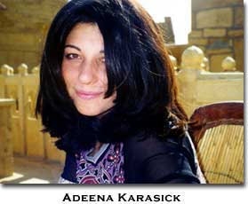

|
“Writing from an Australian context...” Pam Brown Writing from an Australian context it is difficult to think about “women’s experimental writing” as anything other than a luxurious indulgence––whether local or global. But there are, of course, many experimental women writers here. There is great value in “experimentation” in its disruption of existing oppressions and its obvious undermining of power. Poetry’s verticality and lineation guarantees its placement in the “experimental writing” category. In my own work I have tended to code and abstract out from the quotidian & the colloquial and by floating or severely shortening the lines, my aim is to achieve an opposition to restrictive forms and “conservative” lyrical and linear poetry. In this country it has been too easy to forget, or to deny that the land was stolen by whites and that “we” are responsible for the actions of the earlier colonisers––even though many of “us” are immigrants or have arrived recently. In this situation, in order to reconcile past misdemeanours, it is absolutely necessary that the local dominate at this point in time. But I can’t see how didacticism could have any use or give any pleasure to a reader––so I react against it. All I can do is assist indigenous writers in coming to the attention of readers. So, here, it’s a tricky time for experimentation. Australia is an extremely diverse, multicultural society. Here, we call many people NESBs––people from Non-English-Speaking Backgrounds. (This is probably an international acronym). Generations of these people have influenced Australian culture-at-large, especially since the second world war, Korean war and Vietnamese war, the bombing of Lebanon, the Gulf war, Tiananmen Square incidents in China, Bosnia-Herzogovinian war, the East-Timorese struggle for independence and so on, as waves of refugees and immigrants, including writers and other artists, have settled here. English is my language. I have the usual Euro-centric smatterings of romance languages and, once, I attempted to learn Vietnamese. I regret the dominance of English over other languages. I’m not “fascinated” by the untranslatability of poetry. I’m saddened and frustrated by it. I’ve participated in translation workshops at the “Festival franco-anglais de poésie” in Paris. Although the experience was enriching, untranslatability was the conclusion. There is so much writing that I have read ONLY in translation. There
does seem to be a transnational “community” of women experimenters––but
I am only aware of this because of the internet and it does seem
to be mostly led by women from the United States. I don’t see this
as hindering women writers but then I write & read in English. BIO: Pam Brown is the poetry editor for overland magazine and the author of thirteen books of poetry and prose. Her next collection Text thing is due from Paper Bark Press in 2002. Pam Brown lives in Sydney, Australia.
{Gallery:
thalia:
“Army,” “nuclear fears,” and “Desert Storm”}
David Colón The aesthetic world of the Australian word artist thalia is a veritable mine of poetic and political possibilities for visual expression. The chief mode of thalia’s compositions is Pitman’s Shorthand, a now antiquated system of secretarial notation widely used by stenographers through the 1970s. By arranging such shorthand symbols on the page, providing a key at the bottom of the page to decipher for the reader the symbols' meanings, and giving the poem a title that locates the subtext of its iconography, thalia produces poems of extraordinary elaboration, subtlety, and conscience. Karl Young says that thalia’s method of writing “completely recast(s) and reform(s) an existing writing system, without making it arcane or inaccessible to many readers throughout the world”(“thalia: a survey”). The prior system Young alludes to is of course shorthand, insinuating that thalia reconstitutes the shorthand form by removing it from its cultural circumstance and installing it in the discourse of art, thus attributing an aesthetic function to the writing rather than merely its original, practical denotation. thalia transforms what once was a language of the female administrator in the corporate world into a code of artistic declaration that enfranchises the feminine artist, transforming the subordinate into the subversive. As Young remarks: “On one level, thalia’s subversion of this language suggests a revolt against authority of all sorts; on another level, it suggests a revolt against the arrogance of wealth and power; on perhaps yet another, it could suggest just how much rebellion of secretaries [then and now] could bring the industrial world to a screeching halt.” thalia’s appropriation of the underlings’ language to exercise a voice of artistic agency has obvious political undertones of both class and gender. However, the dimension of cultural critique in her poetry extends beyond the impact of the medium. With poems such as “Army,” “nuclear fears,” and “Desert Storm,” thalia composes visual images that resonate within current counter-ideological thought and explicitly draw attention to the contentious relationships of the State. Yet the central notion of each poem is thoroughly felt in the plainness of its language, hence thalia’s ability to not “mak(e) it arcane or inaccessible to many readers throughout the world.” Ironically, it is the abstractness (and therefore minimalism and simplicity) of the visual designs that make them accessible “to many readers throughout the world.” But the artistic impulse to compose in the abstract visual form has very esoteric roots; in the literary avant-gardes of Futurism, Dadaism, and Concretism, elite circles of artists in select urban enclaves dialogue with(in) the university and are protected by the Arts. The established literary sense that enables visual poetics is far removed from the ordinary mass appeal implied by Young's perception of thalia’s creations. Nevertheless, one enables the other, as the meaning of thalia’s visual poems conforms to both theory and simplicity. And this is the brilliance of thalia’s work. Within the context of globalization and experimentation in women’s poetries, thalia’s shorthand poems exemplify the nexus of possibilities available for contemporary expression. The aesthetic of concrete poetry visible in her work borrows from the Brazilian and German avant-garde of the 1950s, while the shorthand comes from the corporate world of the Anglophone woman pre-1980s, and the poems’ themes reflect more recent political turmoil such as the Persian Gulf War and expanding nuclear armament. The diversity of inspirational resources refracted in thalia’s poetry exhibits an extraordinarily sophisticated level of poetic process, one that weaves together the political and the aesthetic in ways that minimize the matter of writing by encoding it simultaneously with social critique and literary theory. thalia’s shorthand poems demonstrate not only a present but a future for the continuing globalization of subaltern poetries, one that necessarily engages narrative and style, the histories of people as well as of scripture. Both are vital to the global experiment, and no one shows it more starkly than thalia. BIO: David Colón is a poet and graduate student in English at Stanford University. He is currently writing a dissertation on the Modernist theory of the ideogram as a medium for poetry, focusing on Ezra Pound, Imagism, the Brazilian avant-garde and concrete poetry.
Arpine Grenier Precisely from the vantage point of those who do not consider the Western, Western (or the Eastern, Eastern), of those who do not regard the Anglophone World as the next best emergence to that of Homo sapiens, there, where poetry exists with no qualifier, is where I go and therefore am––race, gender, class, religion, regardless––there, a swarm, a transnational community, always marginal and post-colonial, always coming through. The Anglophone World cannot draw the swarm into complicity or eccentricity, rather, is itself transformed into one of the many scapegoats to the ongoing proliferation of Gesellschaft (society) vs. Gemeinschaft (community), of materialism/consumerism/capitalism, sailing through the pearly gates of “democratization,” enhancing desire while multiplying signs and aesthetic values, and poetry (art) is waning. Globalization is yet another phenomenon the Anglophone (digital) World has created. Therein lies discomfort due to proximity. But the poet is always experiencing discomfort, regardless of proximity or distance (most preferring distance, as it orders, provides neutrality, transformation). Distance need not evaporate in the presence of globalization, however, and it would not, if we were to withstand the demands of conformity cast by the information age, by its sucking (perforation) through the surveillance and management of desire, withering the senses, ethics, our voice. The mist of philosophy hovers around art. Still, the lag between cultural practice and the theorization of that practice prevails, as does the lag between poetry and literature. We are thankful for that. Personal and cultural histories linger in the body memory of the globalized and transnational poet. No need to be concerned with the translatability or not of the poem. There is no Gestalt, no Bildung, when it comes to poetry. Linguistic and cultural specificity can be experienced (if at all necessary) in ways other than translation. The poem is beyond labels (the work was never conceived, let alone created by a poet). Poetry comes from feeling—a universal experience—such that literary theory and thought need not create clones as they transverse the organs of the poet, the organs that vary according to his or her sensibilities. There is always simulation. Simulation suggests, therefore, may be considered good enough. The theme song from the film Love Story simulates Oum Kulthoum’s Anta ’Omri; more so with different periods, as in Peter Maxwell Davis’ Black Pentecost simulating Kurt Weil’s Petroleum Song. Leopardi to Nazim Hikmet to Siamando to Laura Riding––transposition, semblance. We fall apart as we come together; we come together as we fall apart. There is a deterritorialization only poetry (art) can reach, matter passing into sensation, faceless, genderless, voiceless, awaiting the future as a new version of itself––a pattern, not the thread. One writes not because of political or social systems but because love fails and death waits, while there’s hope, always hope from or to—. The transnationality of Celan gives Celan (the urge); there will never be a clone to that. The identity of the poet stays. So what is that for me––beggar, gusto con justo, consumed as aligned... Beggar if
then you scrapped it all let
us chase that plane in
it also innocent I
should have heard you then
Gusto con justo that
into bloomlets upward Persephone
tiles the ocean floor impression help
me shape
Consumed as aligned information
binds flow after
the accident so
what kind of child comes from such alignment? prejudicial Bio: Arpine Konyalian Grenier is a graduate of the American University of Beirut and the MFA Program at Bard College, NY. Her work has appeared in How2, Columbia Poetry Review, Sulfur, The Iowa Review, Phoebe and Situation, among others.
“If indeed, there is an emergent sense...” Adeena Karasick If indeed, there is an emergent sense of post-national consciousness, there remains a very real problematic of the politic surrounding “linguistic borrowing” (i.e. how that ethically intersects with—& claims to overlook—cultural, gender class, racial or religious specificity). But of course whole question is founded on the fantasy that place is a fixed and identifiable topos. So a new poetics of TRANS (moving across and through) NATIONALISM must firstly question the metaphysical erection of property (historically inscribed in empirical notions of being, purity, autonomy). It must acknowledge the PROPRE as a differential process of appropriation. SENS PROPER (the clean or proper sense) IS SANS PROPRE. Improper, inappropriate (inpropriotous, riotous) depropriated, ex-appropriated and thus repels, re-appelles or propels itself into a place of contaminated difference. A differential productivity that is continually stained, soiled, sullied in semiological processes of pharmakapoetic inf(l)ection. My
cultural history is Russian, Canadian, (& now) American—thus,
my nation-place is not necessarily “transnational” but in
transit; is a multiplicity of positions, acts, voices, intra-transitional
structures, sutures. i am a countersignative construct, an intertextual
matrix. And my chitty chitty shebang boening of emblazoned traceries
wavin’ in the gutter of I CHOOSE my heritage, my history, my context. I choose what i hang on to, what i discard, what i remember. The importation of “continental philosophy” cannot hinder any more than the importation of the hip hop hipsters outside my alphabet city co-op. And in no way, can all of this “transnational” otherness get reduced into a global universalization when even my own “lived-experience” is always already something other (not to mention how it shifts and evolves when translated into a completely unstable language). That language need not be acknowledged as the authoritative, patriarchal, legitimized language of all languages for itself is hybridized, syncretized. Infused with otherness and AS SUCH does not buy into some reductive fallacy of an anglo-American imperium ’cause my lingua franca is a francified english drenched with contingency. What the hell is WORLD ENGLISH? My english anglaise includes british english, Ca na dada english yiddish ’n glish academic english, latinate and vulgar hip hop talk a boogie woogie wigged out english mangled, angled english fingered with a specific yet slippery history. my femme fatale franco-phonemic angered english is hungry, flung and saturated with philosophico-MTV, a pop-up sesame sememe semi(o)tic hip optics of Kabbalistic exegesis. My english, Old English an excluded Middle of mutant englishes muddled mots, matrices. Litigious fidgets. A glossolalic flailing matrix or a malange flange ranging in New Coast barriers, reefs, way out baby english puff ’n stuff singed with eccentricies, ecstasies. New-fangled, wrangled coinings, economies; con ed english cabled in a diasporic, euphoric english re-sounded in scandal, re-placements. Embodying a genealogy of crossings, couplings, switches, detours and branchings—which does not effect a free flowing vacuum buying into some liberalist fantasy of unfettered freedom—but is grounded within a socio-historic discourse. Thus, this semiological agglutination of anglaise glides glissades through a polyglossic glissando CAN NOT BE REDUCED to some warped notion of universalization. Because each syntagm, trope, scission HAD a context, HAS a context which is carried and redispersed, diaspersed. Displaced like sexual difference. And thus, must be viewed as a panaglossic glassary of inscriptive networks. An intra-national, irrational, relational english of intransigent freedoms. Of reciprocal incitations, invitations and struggle. And what is the ethics in this?? When my law, la loi (l’oeil) to look l’oeil VEI which is single and homeless. sub sut lett(er)ing / lettristed in some notion of a twisted sisterhood. So, my question then is, how can i constitute membership when i don’t know what it is i would be belanguing to? How would i join? And where? What are the dues? Especially, this is disturbing when i think that membership from même (self-same) is predicated on some fantasy of autonomous identity. Premised on patriarchal relations of the reproduction of sameness. And, as i can not re-member where i was, who i wanted to be; and, as i shift with every letter, every syntagmatic fracture, fission, pericope a go-go, i cannot re-member one moment to the next. Rather, i think it's crucial to acknowledge that member comes from meme (as in a unit of cultural meaning virally replicating itself across languages, cultures, codes) and thus would produce a memetics of instability. A dis-membership or embership of traces, residues, specters, ghosts and hauntings. i want to join a membership that feverishly hangs on to some loose sense of fractured assembly. For, when what is same is always different, and “every other is every bit other,” i am smothered, bothered by a notion of bonding and community, when, really i am just obsessed with commuting. A community of exile, bonded by diasporic separation and jells in its exilic trajectory. What must be called for, is really then a full-scale re-thinking of law’s duty. A collective ethics which must call into question not only what is being said, and in what language but HOW. It must call into question institutions, foundations and structures of knowledges and powers. Producing a collaberate syllabory which has no clearly empowered or disempowered subject which would effect a poetics of abstract duty that carries within it a violent logic. And just as there is no uncontaminated space (globally, locally), i am not irreducible in my singularity, my gender, my nationalism, my class (which shifts each semester). And, all i wanna do is frolick in the itsy bitsy flummox phlox of porched mournings which festers in afterthought, arches as a culmulative glottis collosus with a range of consequences and possibilities, projections, reactions, resistences, modalities; capacities of duty and obligation. And my civil duty is toward disruption–– So,
milk my
BIO: Adeena Karasick is a poet/cultural theorist and the award-winning author of four books of poetry and poetic theory, Dyssemia Sleaze (Talonbooks, Spring 2000), Genrecide (Talonbooks, 1996), Mêmewars (Talonbooks, 1994), and The Empress Has No Closure (Talonbooks, 1992). Dedicated to language-centered writing, feminist and Jewish concerns, her articles, reviews and dialogues on contemporary poetry, poetics and cultural/semiotic theory have been published worldwide. Forthcoming is The Arugula Fugues (Zasterle Press, Spain). Adeena lives, writes and teaches in New York City.
Spinning These Wheels (for Belen) Nicole Markotic
Had I heard the word “globalization” in grade three, I would have known it to be a word that perfectly describes the teetering spin that sets my globe careening round and round, the pivot of a finger that both halts the spinning and randomly chooses: a dot on the map, a place to happen upon, a global coincidence. Then––and now––I spun my rickety globe in anticipation of where my finger might land (the Kara Sea or Hyderabad? Dar es Salaam or Reindeer Lake?). I spun out of nervous habit (probably how the globe came to be rickety and unstable) and with delight that, so easily, I could set the world speeding speeding––faster than my eyes. The word, globalization, has come to mean everything and nothing. It’s a catch-word for advertisers who wish to expand their marketing plans into countries other than where they locate their home-base. It’s the reason fewer Spanish people take siestas, instead of more North Americans emulating the practice. It’s a description of how fewer and fewer languages express more and more business and social exchanges. Globalized thinking allows the political, religious, economic, and environmental concerns of one region swiftly to become the concerns of an entirely distinct region. It also sometimes forces the cares of one group onto the backs of others. Globalization, for me, means I get to eat out-of-season fruit and watch Czech movies dubbed into English; at the same time, globalization ensures that supermarkets sell Florida oranges often in place of B.C. fresh fruit, and that French-language Canadian films rarely play in English Canada’s cinemas. At one and the same time, I’m irritated by people who resent “globalization” because they do not wish to expand their ideas of the world farther than their backyard fences, and I fear a capitulation to the “globalization” that compels farmers to grow questionable or dubious crops. But, like most people, I’m ignorant of the economic and environmental ramifications of a life-sized globe, spinning out of control. Which means, rather than ostrich myself in some vague and ridiculous notion of apolitical writing (“how can writers possibly know or change politics?”), that, as a writer, I must investigate these issues as they are represented textually. As a writer, the increasing availability of texts not originally written in English has helped my thinking and my written work. I value the easy access I have to texts which make my heart lurch and my head spin. I’m amazed and delighted when I receive emails from German or Spanish readers who have encountered my writing. Such interchange generates dialogue, generates––for me––thinking. As a writer (and especially as a poet?), part of my job is to write down my thinking: my fears and hopes and worries and misgivings about the glib assumptions about “global” and what such a tiny word might mean to my world, their world, our world. Erin Mouré (or as she is known on her latest cover, Eirin Moure) has, in her latest book, Sheep’s Vigil by a Fervent Person, written an ecstatic series of translations of poetry by Alberto Caeiro, one of Portuguese poet Fernando Pessoa’s literary personas. Mouré shifts from the anonymity of a supposedly invisible translator to the overtly discernible context of writer responding to writer. She absorbs, displays, identifies, and claims Pessoa’s original poem, even as she toys with and deflects their meanings. In this way, Pessoa, who wrote his poetry almost a century ago, enters Toronto, Canada at the same time Mouré does, and in the same way: through words. Appearing sometimes as a character in her own words (in Pessoa’s words), Mouré presents her poems on pages facing the original Portuguese. She searches for creeks heard faintly through Toronto’s urban manhole covers, and bends her smile to greet the mysterious choices that words offer both sides of the page. One of the poems (Pessoa’s “XX,” and Mouré’s “XX The Humber is pretty fabulous, really”) speaks to the very particular location that each persona wishes to address. Pessoa’s words, O
Tejo tem grandes navios become in Sheeps Vigil: The
Humber is too small for ships Mouré not only hints as the imagination and concentration necessary to see what is not there (at least not in the now), but she supplies a concrete Canadian-specific image to her reader, an example of one of the many “not there”s we do not see. For most Torontonians, there is no actual “memory” of a canoe-travelled past. But this line, punctuating the end of the stanza, reminds readers to remember what the official story itself has prepared most Ontario residents to forget. The threads connecting forgotten past to overlaid present are the creek under the persona’s avenue and the Humber streaming its way, ultimately, almost to Niagara Falls. She ends the poem by saying, “The creek under my avenue makes no one think of anything. / Whoever goes to the edge of it has only reached the curb,” and yet the “edge” of the avenue/creek curbs/curves into the Portuguese on the next page. In the same way that flat maps lead from the edge of one country to the depth of an ocean on the other side of the planet, so too do these poems veer from English to Portuguese, from then to now, from specific detail to also but different specific detail. Portugal and Canada, 1914 and 2001. Across oceans and language, Erin Mouré / Eirin Moure touches the tip of her finger to a bumpy globe. Sometimes, she feels the texture of her own life, and sometimes she recognizes the heart-murmuring ecstacy of another place, another dot on the map––larger than hope. I don’t want to stop this globe from spinning, I don’t even want to slow it down. I do think, though, that it’s necessary for writers and artists to keep on pointing our fingers––no matter where we land––and writing the stories of those globe-jottings… BIO: Nicole Markotic is a poet and fiction writer currently teaching English, Creative Writing, and Disability Theory at the University of Calgary. Her latest book, Minotaurs & Other Alphabets is a collection of prose poetry published by Wolsak & Wynn (Toronto).
Joan Retallack Since the early nineties, when global cultural inextricability was becoming more and more obvious to me, I’ve been advocating polylingualism as a primary “poethical” strategy for the world context in which we live—one of electronic and live intercultural intimacy. The poethical imperative as I see it is to make art as forms of life that help us live with vitality, and even joy, in a world whose complexity (including the Babel effect) might otherwise be experienced as entirely overwhelming. But there’s a big difference between “polylingualism” and “multi” or “trans” nationalism, not to say globalization. The experimental practitioners of polylingualism whose work most interests me are those who are precisely counter to the homogenizing, transcendent and universalizing implications of such terms. They are working with the intricate vectors and textures of several languages at once, demonstrating incommensurability (untranslatability) by a simultaneous presentation that is in fact a refusal to translate. Anne Tardos’s Cat Licked the Garlic is a lovely example of this—a book written in the four languages (English, German, Hungarian, French) of Tardos’s childhood, none subordinate to any other. The structure of the book implies a readership of all four categories of native speaker each of whom can find homophonic pleasures in the “other” (unfamiliar) languages. This work enacts an ethos of joyous simultaneity, rather than dominance. The languages are not competing, not attempting to obliterate (translate) one another; they are in conversation (literally, turning toward one another for infusions of aesthetic energy). I’d like to think that the time has come when polylingual persons no longer feel they must choose one language that suppresses all others—to become a writer in English, say, extinguishing not only untranslatable expressions and vocabularies, but a sense of “foreignness” that might jar the ear of the reader. Jarring the ear of the reader is important for any kind of social change. The jarred ear is alive to difference in the world. Jarring can become a pleasurable, erotic rather than exotic, excitation. The fifth issue of the magazine Chain (“Different Languages,” eds. Jena Osman, Juliana Spahr, Janet Zweig) as well as much of my own work (most recently MONGRELISME) and more and more of the work coming, particularly, out of urban areas explores the all-terrain language vehicles of mongrelized sensibilities. This quite contrary to political agendas—rules of borders and identity—takes place in the realm of aesthetics—dynamic systems of the sensual intellect that create atmospheres of possibility within cultural climates. Cultural climates, as gossamer and subject to capricious shifts as they can be, are nonetheless the only direct source of transformative ethical and political thought we have. Hence, polylingualism is an aesthetic—not political—principle that draws its energies from the polylingual cultural ambience in which we experience our everyday lives. Think, for instance, of how directions, instructions for the most common objects and experiences, CD liner notes, etc. are now routinely printed in six or more languages. Think of the number of languages, dialects, accents one hears walking a few blocks in any large urban environment. The poethics in using this ambient polylingualism as material for a poesis—a making of an aesthetic form of life out of the events in ordinary life—is a valuing, a foregrounding, of the most crucial fact of our existence: We, in all our reciprocal alterities, are “in it” together; everything depends on the quality of the conversation we can manage between ourselves and ourselves and the natural world. Those reciprocal alterities of race, class, gender, religion, age, species…. prime us for intolerance and misunderstanding. An inherently messy polylingualism is intelligently transgressive of nationalist grammars while coming out of nothing other than one’s situatedness in a specific time and place. The caveat is of course that in today’s world every specific time and place is intersected by global information, every “local” is affected by, is part of global weather. It’s the mix that’s simultaneously exhilarating, unintelligible, potentially richer than any one can presently imagine, daunting, exhausting, frustrating, full of emerging patterns we have much and little to do with…..The point is not to transcend it, but to live in it, in conversation and collaboration, to make (poesis) the best of it, to rise to the occasion of our improbably situated, compound otherness. Odd hypothesis: The only “World English” that could ever exist would be as unintelligible to us as today’s English is to any time-machine transported Angle from the circa 5th century A.D. British Isles. Corollary: The answer is not to try to make cultures, locations, identities, times stand still but to create languages generous enough to acknowledge the fully entangled, changing worlds in which we live. International HOW2 is a beautifully situated (cyberspace) forum in which, among other other things, polylingualism could be explored. BIO: Joan Retallack’s most recent books are MONGRELISME (Paradigm Press, 1999) and How To Do Things With Words (Sun & Moon, 1998). She is also the author of AFTERRIMAGES and Eratta 5uite. MUSICAGE, her book on and with John Cage was recently reissued in paperback by Wesleyan University Press. Retallack’s book of essays, The Poethical Wager, is forthcoming from the University of California Press. An essay on Gertrude Stein, “Readers & Writers, Partners in Crime,” is in the current issue of HOW2 and was originally published in American Letters & Commentary. Retallack is John D. & Catherine T. MacArthur Professor of Humanities at Bard College.
Hazel Smith
I think there is an emergent sense of a transnational community in women’s experimental verse, and we have certainly moved a long way in this respect. When I first joined the experimental poetry scene in England in the mid-eighties, the people who encouraged me were mainly men, and it was difficult to obtain texts by experimental women writers from other countries. The proliferation of anthologies, the availability of material on the internet, email, and increased numbers of relevant conferences, have radically altered this situation. There are still exclusions, hierarchies and omissions. But the laudable appointment of an Australian, Ann Vickery, as editor of HOW2; the presence of magazines such as Tinfish which highlight the work of poets in particular regions; and the international ‘talent scouting’ of editors such as Susan Schultz and Elizabeth Treadwell are all interventions which are helping to counteract this. The formulations on which this forum are based, however, deserve close scrutiny, because they could be said to suppress the very differences they are designed to foreground. For example, the concept of a “community in women’s experimental verse” inadvertently espouses the uni-vers(e)-lising principle it attempts to undercut, and conveys the sense of a homogenous, bounded and static group, purged of stylistic, political and gender differences. In addition the term “experimental” is the product of a particular westernised perspective, a stylistic opposition to the artistic mainstream, which is not necessarily relevant to non-western poetries. And the word “verse” collapses the fertile range of stylistic variations between experimental writers, whose habitus may be the prose poem, the electronic media, the visual arts, or performance. The idea of an Anglo-American imperium might also need some modification. Even though English is hegemonic as a language, American poetry has been, and still is, much more dominant than British poetry (particularly amongst American critics). And it is difficult, I think, to maintain a binary opposition between English and non-English poetries in terms of their inclusion, or exclusion, as part of a transnational community. This is not only because of the complex position of migrant poets, but also because poets in general from a location such as Australia have had difficulty in taking their place within the international poetry community, due to problems of distance and perception. For example, the work of writers such as Ania Walwicz and Anna Couani, who became prominent as experimental writers in Australia fifteen to twenty years ago, would still not be very well known in America and England: Australian writers have also not generally been included in anthologies of women’s writing such as Out of Everywhere. And while Ann Vickery’s Leaving Lines of Gender is a major study by an Australian of American women’s poetry, the reverse situation (an American publishing a comparable study of contemporary Australian women’s writing) seems some way ahead. Nevertheless, the situation is changing at an enormous speed, particularly because the internet is making the work of younger Australian poets more available. I would therefore theorise my own ideal as a community of difference, itself a collection of communities which work in constantly shifting alignments across formal interests, ethnicities, sexualities, the mainstream and the popular—and also, some of the time, across gender. I believe it is important that such a community is interactive and critical, so that we do not only support each other, but also challenge each other’s assumptions and outputs. There are communities of women working in areas as diverse as prose poetry, performance, visual texts and cyberpoetry. But awareness of work in different areas can be quite low —those interested in page-based poetry for example, may be relatively uninformed about work by women such as Christy Sheffield Sanford in the new media. Similarly, we need to take account of groups of women (such as indigenous American and Australian writers) who work in opposition to the political mainstream, without assimilating them into largely westernised ideas of experimentalism. In Australia, for example, the powerful political critiques of Anita Heiss are radical in a different way from the linguistic experiments of Geraldine McKenzie. Experimentalism also varies from place to place: what it means to be experimental in Australia is different from what it means in America, and the range is quite broad. It includes the poetry of Emma Lew, which pivots on a dramatic disjuncture rather different from the linguistic or semantic disjuncture characteristic of language writing. But it also includes the fictocritical writing of Anne Brewster which crosses the boundaries between theory and creative writing, prose and poetry, writer and critic, and demonstrates a cultural empathy both with indigenous women’s writing and American language writing. It is a continuing challenge for a journal like HOW2 to make sure that it does not ossify into nostalgic celebration of the language writing heritage (however much we might admire such work) but keeps representation of women’s experimental writing fluid, transnational and constantly evolving. This challenge is met in recent HOW2 features on Australian and British women’s writing edited by Debbie Commerford and Caroline Bergvall, which bring together different poetries across a variety of different stylistic, ethnic and technological divides. For the critic there can be a considerable tension between the wish to preserve the distinctiveness of experimental writing and the need to address poetries which are written from very different cultural, linguistic and formal perspectives. What is required are theoretical frameworks which more readily take accounts of alignments between poetic communities, without assimilating one to the other. When I spoke and wrote about sonic poetries some years ago, I was keen to address the matter of gender imbalance in the history of sound poetry, which I saw as a precursor to what I called “new sonic poetries.” I was amazed by the way in which two major collections of sound poetry contained no work by women. I also addressed the way that some poets were using linguistic de-formation to confront ethnic and national differences. However my accounts did not draw—beyond a passing mention—on other kinds of oral poetry such as rap or Jamaican dub poetry––and I now see this as an unnecessary form of exclusion. The main reason I did not include them was that performance poetries such as rap and dub seemed to employ a syntax which was radically dissimilar to the asyntactic musical and linguistic structures which characterised my own sonic collaborations and the work of other ”experimental” sonic poets, such as Amanda Stewart. Dub and rap sounded different to me, had different objectives, and also seemed closer to popular culture. I realise now, however, that a theoretical framework which stressed cultural alignments more fully, and was less hemmed in by definitions of the experimental, might have allowed me to be more inclusive. I could have pointed out similarities while maintaining fundamental differences, and without subordinating one cultural perspective to the other. I also think we need to address, theoretically, the fact that writers often do not live continuously in one place. Most anthologies and critical commentaries are still assembled as if people lived their lives always in the same place, or as if they migrated to a single permanent destination. This seems short-sighted because a creative and celebratory engagement with continuous displacement is symptomatic of globalisation. “The poet who travels” (the title of one of my recent prose poems!) is becoming commonplace, and may be one of the main ways in which poetry addresses the tension between the local and the global. At the very least the notion of the geographical movement of experimental women writers, typical of globalisation, needs to be more fully addressed. Finally, unless we are all prepared to make a lot more effort to be multi-lingual—and perhaps this should be one of our goals—the hegemonic hold of the English language seems to me to be fairly intractable. However, I still believe we can make powerful interventions to interrupt this domination, and many poets do. Parallel versions of text in different languages can be juxtaposed to create an interaction between them, creating a stimulating ‘take’ on the process of translation. And English can be pushed beyond itself and—as it is in the work of Maggie O’Sullivan and many others—made to both evoke other languages and register their absence in English. Particularly important is the role of mixed media work which relies less on language, and more on trans-linguistic phenomena such as images and sound, for communication—despite their various exclusions, sound and concrete poetry in the middle of the last century were awesomely successful in their capacity to communicate over linguistic boundaries. There is room for optimism here, and the potential to harness relationships between text, image and sound, in ways which undercut the dominance of any one verbal language, is an understated aspect of the new media. It is likely to have radical effects on our writing, and our sense of connection as writers, in ways which go far beyond the simple availability of material on the internet. Bio: Hazel Smith (h.smith@unsw.edu.au) works in the areas of poetry, experimental writing, performance, multi-media work and hypertext, and her web page can be found at http://www.australysis.com. Her latest volume is Keys Round Her Tongue: short prose, poems and performance texts (Soma Publications, 2000). She has produced two CDs, Poet Without Language with austraLYSIS, and Nuraghic Echoes (in collaboration with Roger Dean). She is also co-author of a number of multi-media and hypermedia works, including Intertwingling on the HOW2 site. Hazel is a Senior Lecturer in the School of English at the University of New South Wales. She is co-author with Roger Dean of Improvisation, Hypermedia And The Arts Since 1945 (Harwood Academic, 1997). Her book, Hyperscapes in the Poetry of Frank O’Hara: difference, homosexuality, topography, was published by Liverpool University Press in late 2000. (this issue's table of contents)
|